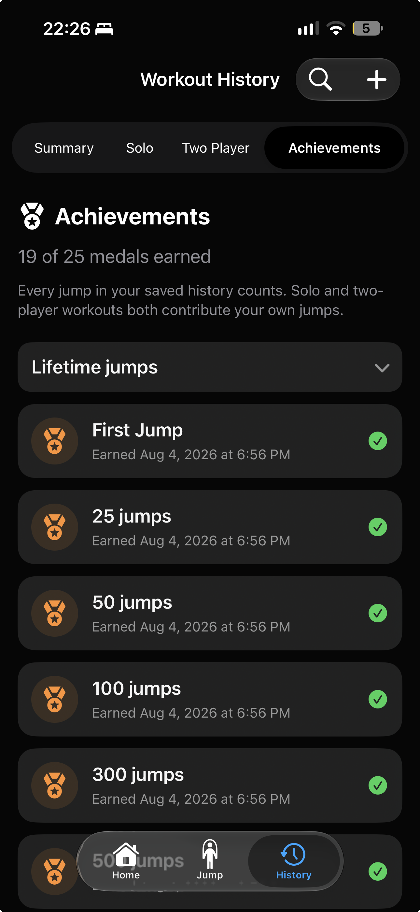

LIVE TRACKING
Use your iPhone camera to track jumps. Set reps and sets, follow your workout time, and pause whenever you need a breather.
Begin or continue your jump rope journey with tracking on your phone, computer, and watch. Detailed workout history for in-depth analysis of your workouts.
Camera tracking on iPhone. Wrist-motion estimates on Apple Watch.
Use your iPhone camera to track jumps. Set reps and sets, follow your workout time, and pause whenever you need a breather.
Shape each session around your goals with adjustable reps, sets, countdowns, rest periods, and optional challenges.
Review completed and partial workouts, explore individual sets, and keep a record of the monsters you defeat.
Follow your jump streak, workout duration, total jumps, and personal records across different time ranges.
Open the app before a jump rope session to track your heart rate throughout your workout, or start a Watch Only session with estimated wrist-motion counting, rep goals, a preparation countdown, and haptic cues.
Celebrate milestones as your jump count grows, from your first jump to lifetime records.

Compatibility
macOS
iPadOS
iOS
watchOS
Here to help
This draft policy describes Jump Rope Tracker's current data practices. The publisher's legal name, contact email, and effective date must be added before release.
With camera permission, the app uses camera frames to estimate body landmarks and count jumps. MediaPipe processes camera input on your device. The app does not intentionally upload or save camera video. The MediaPipe SDK may send performance and usage metrics to Google; review its current privacy notice before release.
The app stores your chosen name, optional daily weigh-ins, workout history, goals and settings, reminders, and legal acknowledgment locally. Workout history may include jump counts, times, weight used for an estimate, estimated distance and calories, and optional nearby player results. You can export and import a SQLite backup; a file you export is controlled by where you save or share it.
If you grant permission, the app may read heart rate and workout energy information and write workout information through Apple Health. Health access is optional and controlled in device settings. If enabled, reminders use device notification permissions and settings.
If you start a nearby session, the app shares your chosen player name and live workout progress with the connected nearby device. Nearby sessions use local device connectivity. Do not use a name you do not want the other player to see.
The app uses Google AdMob to show ads. Google and its partners may process device identifiers, IP address, ad interactions, and other information under their policies. The app does not intentionally send camera frames, workout history, or Health data to AdMob. Exact advertising data practices and consent requirements must be confirmed against the release SDK configuration.
Workout history and settings stay on your device until you delete them, reset the app, or remove the app, subject to device backups. You can delete workout entries in the app, change camera, Health, and notification permissions in device settings, and stop nearby play. Exported backups must be deleted where you saved them.
Publisher legal name, contact email, and effective date: to be completed before release. We will update this policy if data practices change and present material changes for renewed review.
These draft terms govern your use of Jump Rope Tracker. By using the app, you agree to these terms. If you do not agree, do not use the app. The publisher's legal name and contact information must be added before release.
The app provides general fitness tracking and estimates. It is not medical advice, a medical device, or a substitute for professional care. Exercise within your abilities, use a safe space, and stop if you feel pain, dizziness, or other concerning symptoms. Jump counts, calories, distance, and health measurements may be inaccurate.
Use the app lawfully and do not interfere with its operation. You are responsible for your device, your workouts, and any information you choose to enter or share with another nearby player.
The Privacy Policy explains how the app handles data. The app uses third-party components for pose tracking and advertising, and may use Apple Health and local device connectivity if you choose those features. Their services may have separate terms.
We may update, suspend, or discontinue features. We may revise these terms; material changes will be presented for renewed review and acceptance before continued use.
The app is provided as available, subject to any rights that cannot be excluded by law. To the extent permitted by applicable law, the publisher is not responsible for indirect or consequential losses arising from use of the app. Nothing here limits rights that applicable consumer law protects.
Publisher legal name, contact email, governing law, and effective date: to be completed before release.
Jump counts, distance, and calories are estimates. Apple Health features depend on permissions and available data.